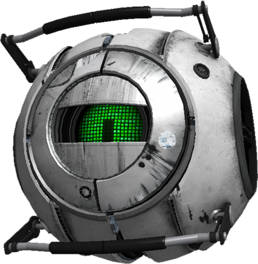
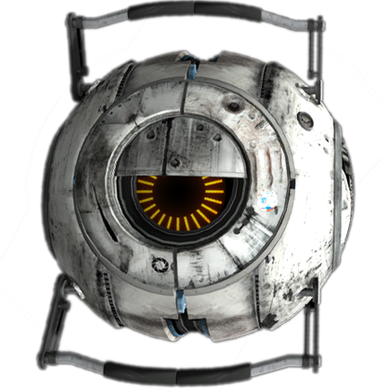
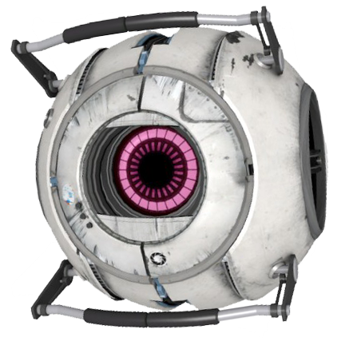

|  |
Adventure Core
The Adventure Sphere, also known as Rick, is a corrupted personality core of male programming who appears in the single-player campaign of Portal 2.
He is one of the cores retrieved by GLaDOS for Chell to attach onto Wheatley, in attempt to initiate a core transfer procedure via corrupting his control of the central core body.
The Adventure Sphere speaks in the manner of a stereotypical "tough guy", spending most of his time boasting about his bravery and lust for danger. Upon seeing Chell, he flirts with her and makes increasingly chauvanistic comments. He even tries (but to no avail) to convince Chell to take a "lady break" while he deals with Wheatley by himself.
Rick, along with all the corrupted cores, is voiced by Nolan North.
|
|  |
Space Core
The Space Sphere (more commonly known as the Space Core) is a corrupted personality core of male programming who first appears in Portal 2. He is the first of three cores attached to Wheatley by Chell in order to initiate a Core Transfer Procedure.
The Space Sphere speaks in a hyperactive manner, constantly talking about his infatuation with outer space and how he would like to one day go to space. However, a small portion of his dialogue states that he eventually gets bored of space and wants to return to Earth. His dream of going to space is fulfilled after he gets sucked through a portal that sends him and Wheatley into space.
The Space Sphere, along with all the corrupted cores, is voiced by Nolan North.
The Space Sphere's character was inspired by an advertisement for the Oregon Coast Aquarium.[1]
The Space Sphere became a popular character on the Internet after the release of Portal 2. He is seen in parodies of popular culture videos.
To celebrate Skyrim coming to the Steam Workshop, Valve created a mod to have the Space Sphere drop into a nearby home just outside of Whiterun. In this mod he is known as the Space Core.
|
|  |
Fact Core
The Fact Sphere is a corrupted personality core that appears in the single-player campaign of Portal 2.
Fact is one of the cores retrieved by GLaDOS for Chell to attach onto Wheatley, in order to initiate a core transfer procedure via corrupting his control of the central core body.
The Fact Sphere speaks like a stereotypical "know-it-all", spending most of its time rapidly rattling off various facts. While a small portion of the listed facts are true, most of them are incorrect and downright illogical.
The Fact Sphere, along with all the corrupted cores, is voiced by Nolan North.
|